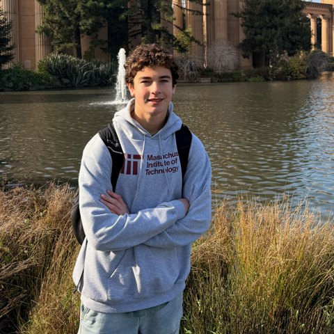
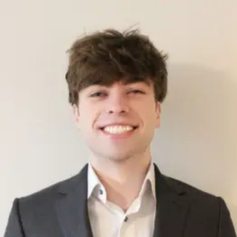

Mathetic, adj. — concerned with increasing our capacity
to learn, think, create, and discover.
We're Mathetic, a small team of CS researchers and PhD students interested in computer and cognitive science. We volunteer to help first-year STEM undergrads build a free project and land their first research position during their first few weeks on campus.
We're meeting with undergrads every day this week, so if you'd like to learn about undergrad research at Berkeley and get started on a project to build up your resumé and begin doing research with a professor, we'd love to chat!
Book a time for an in-person chat with us on campus this week. We'll sit down together and
This is totally free :)
<3 Hudson and David

